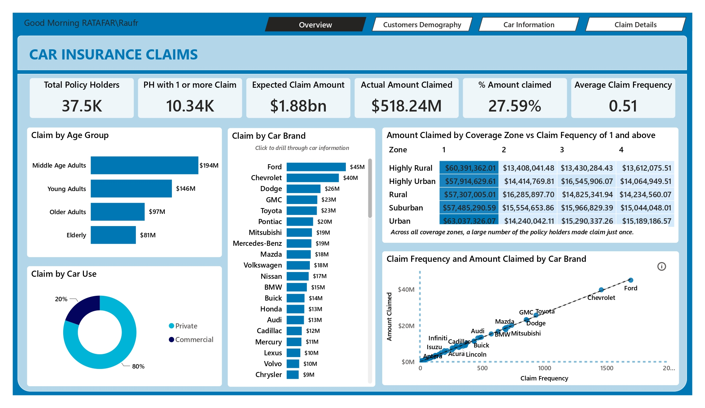
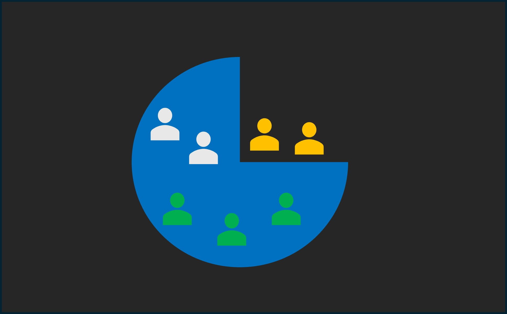

Performed in-depth analysis of Car Insurance Claims data providing valuable insights into the distribution of claims and factors
influencing claim amounts. By employing statistical analysis techniques and leveraging demographic and vehicle data,
the project offers actionable insights that can inform insurance company's policies, pricing strategies, and
customer engagement activities.


Cleaned and transformed data from two databases comprising eight tables by handling missing and empty values, resolving name inconsistencies, correcting datatypes
to ensure accuracy and consistency for subsequent Analysis.
This project involved measuring the Profit and Loss statements and developing a forecasting model for S&P 500 companies. An exploratory analysis of historical financial data was conducted,
followed by the creation of a forecasting model to predict Revenue, Gross Profit, and Operating Income under three scenarios: Base, Best, and Weak cases. This analysis provides actionable
insights to inform strategic financial decisions.

Conducted a comprehensive analysis of call center performance to evaluate service quality and understand customer perception. This project aimed to measure customer satisfaction and sentiment,
providing insights into how well the company meets customer needs and identifying opportunities for service improvement.

Conducted an exploratory data analysis using SQL and Power BI to gain insights into the Chinook Music Store's media inventory, customer and employee demographics, and invoice information.
This analysis provided valuable understanding of the store's operations and helped identify key trends and patterns in their data.

Conducted RFM analysis to segment customers based on their transaction history. This analysis evaluates Recency (recent purchases),
Frequency (purchase frequency), and Monetary value (total purchase value). Customers were scored across these dimensions to better understand
their purchasing habits and optimize marketing strategies.

Performed an analysis of the spread of tuberculosis across WHO countries from 2000 to 2020. This project provided critical insights into the most affected regions,
enabling stakeholders to identify areas requiring increased intervention. The analysis supports global efforts to eradicate tuberculosis and achieve a TB-free world.